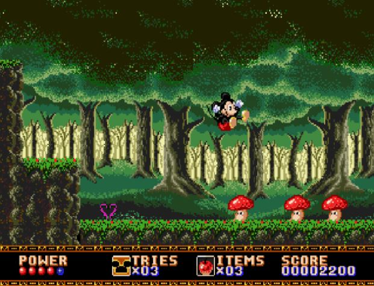

Castle of Illusion starring Mickey Mouse

Fecha de lanzamiento: 20 de noviembre de 1990
Género: Plataformas
Desarrollador: Sega
Copias vendidas: 4 millones
Sinopsis: Mickey Mouse se embarca en una mágica aventura para rescatar a Minnie de la malvada bruja Mizrabel en el castillo de la ilusión.